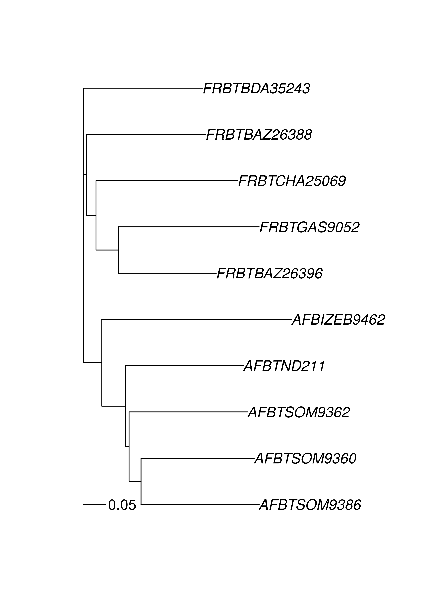
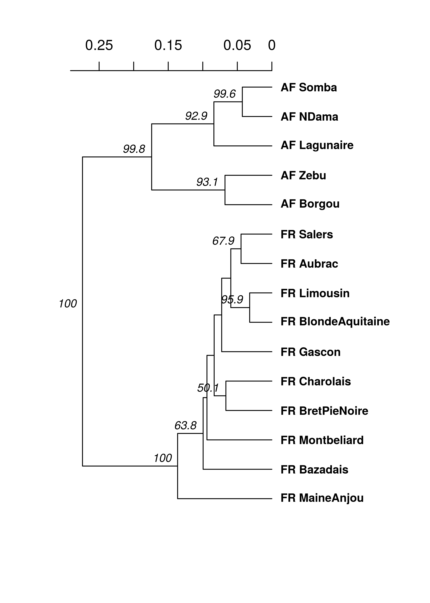

9: Population structure: \(G_{ST}\), genetic distance, clustering, and minimum spanning networks
In this chapter we explore various ways of assessing if population are structured (e.g., differentiated). You can think of population structure as identifying clusters or groups of more closely related individuals resulting from reduced gene flow among these groups. Populations can be studied to determine if they are structured by using for example population differentiation (e.g. \(G_{ST}\)), clustering, or graphing of minimum spanning networks (MSN). Note, that this chapter will utilize many data sets due to the unique features offered by each. Let’s first look at an example of population differentiation based on \(G_{ST}\).
\(G_{ST}\) an example with Felis catus data.
Assessing genetic diversity almost always starts with an analysis of a parameter such as \(G_{ST}\). There are lengthy debates as to what measure of differentiation is better (Meirmans & Hedrick, 2011). Instead of going into that lengthy debate, it would be more worthwhile to point you into the direction of a package dedicated to Modern Methods of Differentiation called mmod. We will use the data set nancycats containing 17 colonies of cats collected from Nancy, France. As cats tend to stay within small groups, we expect to see some population differentiation. In terms of these diversity measures, an index of \(G_{ST}\) = 0 indicates no differentiation, whereas \(G_{ST}\) = 1 indicates that populations are segregating for differing alleles.
Let’s load the package and the example data set:
if (!require("mmod")){
install.packages("mmod", repos = "http://cran.at.r-project.org")
require("mmod")
}
data("nancycats")
nancycats## /// GENIND OBJECT /////////
##
## // 237 individuals; 9 loci; 108 alleles; size: 158.4 Kb
##
## // Basic content
## @tab: 237 x 108 matrix of allele counts
## @loc.n.all: number of alleles per locus (range: 8-18)
## @loc.fac: locus factor for the 108 columns of @tab
## @all.names: list of allele names for each locus
## @ploidy: ploidy of each individual (range: 2-2)
## @type: codom
## @call: genind(tab = truenames(nancycats)$tab, pop = truenames(nancycats)$pop)
##
## // Optional content
## @pop: population of each individual (group size range: 9-23)
## @other: a list containing: xyNow we will use Hendrick’s standardized \(G_{ST}\) to assess population structure among these populations (Hedrick, 2005).
Gst_Hedrick(nancycats)## $per.locus
## fca8 fca23 fca43 fca45 fca77 fca78
## 1.0398743 1.4899782 1.5691427 3.4876251 1.0142322 -0.6831738
## fca90 fca96 fca37
## 1.3796335 4.2219618 -0.2544441
##
## $global
## [1] 2.975657What does this output tell us?
Next we will look at genetic distance to find related groups of individuals.
Genetic Distance
If we wanted to analyze the relationship between individuals or populations, we would use genetic distance measures which calculate the “distance” between samples based on their genetic profile. These distances can be visualized with heatmaps, dendrograms, or minimum spanning networks. In the package poppr, there are several distances available:
| Distance | Function | Marker type | Can handle missing data |
|---|---|---|---|
| Bruvo’s distance | bruvo.dist |
microsatellite | yes |
| Edwards’ distance | edwards.dist |
any | no |
| Nei’s distance | nei.dist |
any | no |
| Provesti’s distance | provesti.dist |
any | yes |
| Reynolds’ distance | reynolds.dist |
any | no |
| Rogers’ distance | rogers.dist |
any | no |
One common way to visualize a genetic distance is with a dendrogram. For this example, we will use the microbov data set (Laloe et al., 2007). This contains information on 704 cattle from both Africa and France over several different breeds. We can create a dendrogram over all 704 samples, but that would be difficult to visualize. For our purposes, let’s take ten random samples and calculate Provesti’s distance, which will return the fraction of the number of differences between samples:
library("poppr")
library("ape") # To visualize the tree using the "nj" function
library("magrittr")
data(microbov)
set.seed(10)
ten_samples <- sample(nInd(microbov), 10)
mic10 <- microbov[ten_samples]
micdist <- provesti.dist(mic10)
micdist## FRBTBDA35243 AFBTSOM9386 FRBTBAZ26396 FRBTGAS9052 AFBIZEB9462
## AFBTSOM9386 0.7500000
## FRBTBAZ26396 0.6000000 0.6833333
## FRBTGAS9052 0.6333333 0.8500000 0.5333333
## AFBIZEB9462 0.7166667 0.6666667 0.7833333 0.8500000
## AFBTND211 0.6333333 0.5666667 0.6833333 0.7333333 0.8000000
## AFBTSOM9362 0.6000000 0.5333333 0.6666667 0.8166667 0.7000000
## AFBTSOM9360 0.7000000 0.5166667 0.6000000 0.7166667 0.7333333
## FRBTCHA25069 0.6166667 0.7000000 0.5833333 0.6833333 0.8000000
## FRBTBAZ26388 0.5333333 0.7000000 0.5500000 0.6333333 0.7500000
## AFBTND211 AFBTSOM9362 AFBTSOM9360 FRBTCHA25069
## AFBTSOM9386
## FRBTBAZ26396
## FRBTGAS9052
## AFBIZEB9462
## AFBTND211
## AFBTSOM9362 0.5333333
## AFBTSOM9360 0.5500000 0.5666667
## FRBTCHA25069 0.6500000 0.7333333 0.7166667
## FRBTBAZ26388 0.6000000 0.6666667 0.6833333 0.6166667The above represents the pairwise distances between these 10 samples. We will use this distance matrix to create a neighbor-joining tree.
theTree <- micdist %>%
nj() %>% # calculate neighbor-joining tree
ladderize() # organize branches by clade
plot(theTree)
add.scale.bar(length = 0.05) # add a scale bar showing 5% difference.
Notice that the sample names start with either “AF” or “FR”. This indicates their country of origin and we are seeing that the populations cluster correspondingly. Of course, a tree is a hypothesis and one way of generating support is to bootstrap loci. This can be achieved with the poppr function aboot.
set.seed(999)
aboot(mic10, dist = provesti.dist, sample = 200, tree = "nj", cutoff = 50, quiet = TRUE)
##
## Phylogenetic tree with 10 tips and 8 internal nodes.
##
## Tip labels:
## FRBTBDA35243, AFBTSOM9386, FRBTBAZ26396, FRBTGAS9052, AFBIZEB9462, AFBTND211, ...
## Node labels:
## 100, NA, NA, 70, NA, NA, ...
##
## Unrooted; includes branch lengths.The bootstrap value of 100 on the node separating the French and African samples gives support that the country of origin is a factor in how these breeds are structured. If we wanted to analyze all of the breeds against one another, it would be better to create a bootstrapped dendrogram based on a genetic distance. To do this, we will create a genclone object that will contain 3 stratifications: Country, Breed, and Species. We will then set the population to Country by Breed, convert the data to a genpop object and then create a tree using aboot with Nei’s genetic distance.
# Setting up the data
microbov <- as.genclone(microbov, strata = other(microbov))
microbov##
## This is a genclone object
## -------------------------
## Genotype information:
##
## 704 original multilocus genotypes
## 704 diploid individuals
## 30 codominant loci
##
## Population information:
##
## 0 strata.
## 15 populations defined - Borgou Zebu Lagunaire ... MaineAnjou
## Montbeliard SalersnameStrata(microbov) <- ~Country/Breed/Species
setPop(microbov) <- ~Country/Breed
# Analysis
set.seed(999)
microbov %>%
genind2genpop() %>%
aboot(cutoff = 50, quiet = TRUE, sample = 1000, distance = nei.dist) ##
## Converting data from a genind to a genpop object...
##
## ...done.
##
## Phylogenetic tree with 15 tips and 14 internal nodes.
##
## Tip labels:
## Borgou, Zebu, Lagunaire, NDama, Somba, Aubrac, ...
## Node labels:
## 100, 100, 99.8, 92.5, 92.4, 63.6, ...
##
## Rooted; includes branch lengths.Now we can see that, in all 1,000 bootstrapped trees, the African and French samples were each in separate clades. Of course, dendrograms are only one type of analysis you can use genetic distances for. Below is a table describing some of the different analyses for which you can utilize genetic distance:
| Analysis | Function | Package | Note |
|---|---|---|---|
| Bootstrapped dendrograms | aboot |
poppr | |
| Mantel Test | mantel.randtest |
ade4 | To be used with geographic distance matrix |
| Principle Coordinates Analysis | cmdscale |
stats | |
| DAPC | dapc |
adegenet | Convert to matrix with as.matrix |
| Minimum Spanning Networks | poppr.msn |
poppr | requires a distance matrix; cannot handle genpop |
The rest of this chapter will utilize Bruvo’s distance (Bruvo et al., 2004). It is important to note that calculating Bruvo’s distance is computationally different than other distances, so it has its own specialized functions for minimum spanning networks and bootstrapping that do not need a distance matrix:
| General function | Bruvo specific |
|---|---|
poppr.msn |
bruvo.msn |
aboot |
bruvo.boot |
Minimum spanning network
For this section, we will use the monpop data set from (Everhart & Scherm, 2015). See Chapter6 for more details. We will be focusing on sources of multilocus genotypes. The life cycle of the pathogen Monilinia fructicola begins with an ascospore (sexual propagule) released from a mummified peach fruit that had overwintered on the ground. It infects an emerging blossom that, in turn, asexually infects fruit, which proceed with cyclical infections. We might have questions such as:
- Are the major genotypes of Fruit Rot (FR) samples closely related?
- To what degree do the Blossom Blight (BB) samples contribute to the FR?
Let’s load the data:
library("poppr")
library("magrittr")
data(monpop)
splitStrata(monpop) <- ~Tree/Year/Symptom
summary(monpop)##
## # Total number of genotypes: 694
##
## # Population sample sizes:
## 7_09_BB 26_09_BB 26_09_FR 7_09_FR 26_10_BB 45_10_BB 79_10_BB 79_10_FR
## 23 41 132 73 5 13 1 64
## 26_10_FR 45_10_FR 26_11_BB 26_11_FR
## 85 130 30 97
##
## # Number of alleles per locus:
## CHMFc4 CHMFc5 CHMFc12 SEA SED SEE SEG SEI SEL
## 3 6 3 11 9 5 8 7 5
## SEN SEP SEQ SER
## 9 8 11 10
##
## # Number of alleles per population:
## 7_09_BB 26_09_BB 26_09_FR 7_09_FR 26_10_BB 45_10_BB 79_10_BB 79_10_FR
## 48 53 58 48 37 40 13 44
## 26_10_FR 45_10_FR 26_11_BB 26_11_FR
## 60 64 60 63
##
## # Percentage of missing data:
## [1] 0.5098648
##
## # Observed heterozygosity:
## [1] 0
##
## # Expected heterozygosity:
## [1] 0We notice that tree number 26 is the only one to have been sampled for all three years. Let’s use it as an example.
t26 <- monpop %>% setPop(~Tree) %>% popsub("26") %>% setPop(~Year/Symptom)
t26##
## This is a genclone object
## -------------------------
## Genotype information:
##
## 155 multilocus genotypes
## 390 haploid individuals
## 13 codominant loci
##
## Population information:
##
## 3 strata - Tree Year Symptom
## 6 populations defined - 9_BB 9_FR 10_BB 10_FR 11_BB 11_FRNow that we have our tree, let’s calculate a MSN using Bruvo’s distance (Bruvo et al., 2004). Remember that this distance is based on a stepwise mutation model, so we have to first specify what kind of repeats units we have in our data (eg. dinucleotide = 2, trinucleotide = 3, etc.):
# Set up our repeat lengths and populations to analyze
reps <- c(CHMFc4 = 7, CHMFc5 = 2, CHMFc12 = 4,
SEA = 4, SED = 4, SEE = 2, SEG = 6,
SEI = 3, SEL = 4, SEN = 2,
SEP = 4, SEQ = 2, SER = 4)
sub9 <- c("9_BB", "9_FR")
# Calculate the MSN
t26.9msn <- bruvo.msn(t26, replen = reps, sublist = sub9, showplot = FALSE)The minimum spanning network is calculated via bruvo.msn. I’ve set the argument showplot = FALSE because I want to use the more powerful function plot_poppr_msn to view the MSN. In this, I’m telling it to lable none of the samples, color populations using the “cm.colors” palette and scale the size of the nodes to \(log_{1.25}\). If you want to know what other things this function can do, simply type help("plot_poppr_msn")
# Visualize the network
set.seed(9001)
plot_poppr_msn(t26, t26.9msn, inds = "none", palette = cm.colors, nodebase = 1.25)
We can see that the Blossom Blight in the tree (pink pie pieces) heavily contributed to the major groups of MLGs found in the Fruit Rot (blue pie pieces).
Try it! See if you can produce similar graphs with the 2010 and 2011 populations.
K-means hierarchical clustering
A recent study reported that the origin of the potato late blight pathogen Phytophthora infestans lies in Mexico as opposed to South America (Goss et al., 2014). We saw in the previous chapter that South American populations showed signatures of clonal reproduction while Mexican populations showed no evidence rejecting the null hypothesis of random mating. In this section, we will use K-means clustering in combination with bootstrapped dendrograms to see how well this pattern holds up. Clonal populations should have short terminal branch lengths and should cluster according to those branches. Panmictic populations will show no clear pattern. Let’s look at the data:
library("poppr")
data("Pinf")
Pinf##
## This is a genclone object
## -------------------------
## Genotype information:
##
## 72 multilocus genotypes
## 86 tetraploid individuals
## 11 codominant loci
##
## Population information:
##
## 2 strata - Continent Country
## 2 populations defined - South America North AmericaFirst, we will perform a cluster analysis:
MX <- popsub(Pinf, "North America")
MXclust <- find.clusters(MX)
## Choose the number PCs to retain (>=1):> 50PC stands for principal components, which are unit-less transformations of your data that explain the variance observed. For the purposes of find.clusters, we can keep as many as we want.

## Choose the number PCs to retain (>=2:> 3BIC stands for “Bayesian Information Criterion”. The lower the BIC value, the better. On the x axis are the number of clusters. We see that there is a bend at 3 clusters, indicating that the data clusters optimally into three groups.
And now we can see the cluster assignments:
MXclust## $Kstat
## NULL
##
## $stat
## NULL
##
## $grp
## PiMX01 PiMX02 PiMX03 PiMX04 PiMX05 PiMX06 PiMX07 PiMX10 PiMX11
## 2 2 3 1 1 1 1 3 3
## PiMX12 PiMX13 PiMX14 PiMX15 PiMX16 PiMX17 PiMX18 PiMX19 PiMX20
## 1 3 3 2 3 2 1 1 1
## PiMX21 PiMX22 PiMX23 PiMX24 PiMX25 PiMX26 PiMX27 PiMX28 PiMX29
## 2 3 2 3 1 2 3 3 1
## PiMX30 PiMX40 PiMX41 PiMX42 PiMX43 PiMX44 PiMX45 PiMX46 PiMX47
## 3 3 2 2 2 2 2 2 2
## PiMX48 PiMX49 PiMX50 PiMXT01 PiMXT02 PiMXT03 PiMXT04 PiMXT05 PiMXT06
## 3 3 3 2 2 1 1 2 1
## PiMXT07 PiMXt48 PiMXt68
## 1 1 1
## Levels: 1 2 3
##
## $size
## [1] 16 17 15We will go through the same procedure for the South American population.
SA <- popsub(Pinf, "South America")
SAclust <- find.clusters(SA)
## Choose the number PCs to retain (>=1):> 30
## Choose the number PCs to retain (>=2):> 4Notice here that there is no local minimum in the curve. This indicates that there might not be enough information in the data set to properly cluster. We will go ahead by choosing the highest number of clusters:
Trees
Now we will build trees. We are using Bruvo’s distance since polyploids bias calculation of other distances:
pinfreps <- c(2, 2, 6, 2, 2, 2, 2, 2, 3, 3, 2)
MXtree <- bruvo.boot(MX, replen = pinfreps, cutoff = 50, quiet = TRUE)
SAtree <- bruvo.boot(SA, replen = pinfreps, cutoff = 50, quiet = TRUE)
We see very long terminal branches in the MX tree. Let’s see how the groups we found with the clustering algorithm match up:
library("ape")
cols <- rainbow(4)
plot.phylo(MXtree, cex = 0.8, font = 2, adj = 0, tip.color = cols[MXclust$grp],
label.offset = 0.0125)
nodelabels(MXtree$node.label, adj = c(1.3, -0.5), frame = "n", cex = 0.8,
font = 3, xpd = TRUE)
axisPhylo(3)
You can see that the assigned clusters don’t necessarily group with the dendrogram clusters. Let’s see what happens when we view this with the South American population:
plot.phylo(SAtree, cex = 0.8, font = 2, adj = 0, tip.color = cols[SAclust$grp],
label.offset = 0.0125)
nodelabels(SAtree$node.label, adj = c(1.3, -0.5), frame = "n", cex = 0.8,
font = 3, xpd = TRUE)
axisPhylo(3)
Everything clusters together nicely, further supporting a non-panmictic population.
References
Bruvo R., Michiels N., D’Souza T., Schulenburg H. 2004. A simple method for the calculation of microsatellite genotype distances irrespective of ploidy level. Molecular Ecology 13:2101–2106. Available at: http://dx.doi.org/10.1111/j.1365-294X.2004.02209.x
Everhart S., Scherm H. 2015. Fine-scale genetic structure of Monilinia fructicola during brown rot epidemics within individual peach tree canopies. Phytopathology 105:542–549.
Goss E., Tabima J., Cooke D., Restrepo S., Fry W., Forbes G., Fieland V., Cardenas M., Grünwald N. 2014. The irish potato famine pathogen Phytophthora infestans originated in central mexico rather than the andes. Proceedings of the National Academy of Sciences 111:8791–8796. Available at: http://www.pnas.org/content/early/2014/05/29/1401884111.abstract
Hedrick P. 2005. A standardized genetic differentiation measure. Evolution 59:1633–1638. Available at: http://onlinelibrary.wiley.com/doi/10.1111/j.0014-3820.2005.tb01814.x/abstract
Laloe D., Jombart T., Dufour A-B., Moazami-Goudarzi K. 2007. Consensus genetic structuring and typological value of markers using multiple co-inertia analysis. Genetics Selection Evolution 39:545–567. Available at: http://dx.doi.org/10.1051/gse:2007021
Meirmans P., Hedrick P. 2011. Assessing population structure: \(F_{ST}\) And related measures. Molecular Ecology Resources 11:5–18. Available at: http://onlinelibrary.wiley.com/doi/10.1111/j.1755-0998.2010.02927.x/full